00:00:00 · 0.500s
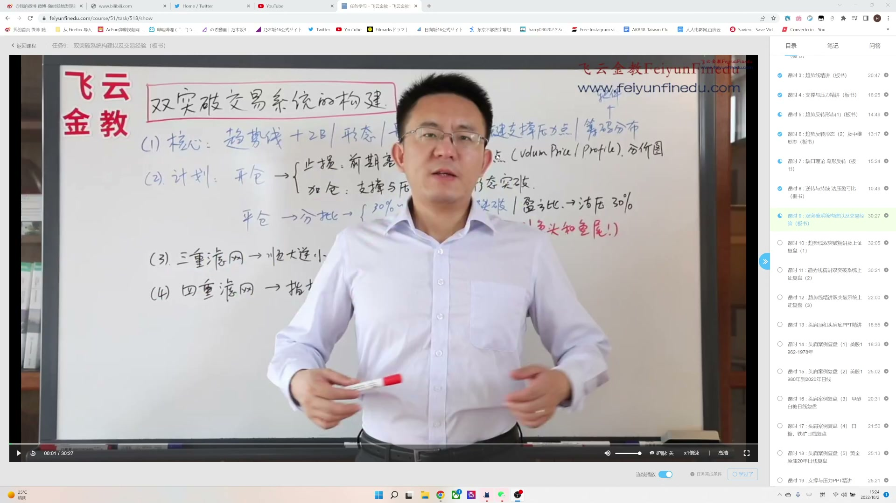
亲爱的欢迎朋友大家好 欢迎来到非用金教 前面呢我们打基础打了这么久 所有的知识点 一个点一个点的讲 一个点一直到最后我们的逆转于持续 我们的核心 然后终于到了我们的核心的一点 就是双突破交易系统的构建 我们来看一看 我们前面曾经讲过一二三法则 大家可能看过
画面保留原分辨率；时间来自实际解码 PTS。附近语音是自动识别候选。点击画面可查看原图。

亲爱的欢迎朋友大家好 欢迎来到非用金教 前面呢我们打基础打了这么久 所有的知识点 一个点一个点的讲 一个点一直到最后我们的逆转于持续 我们的核心 然后终于到了我们的核心的一点 就是双突破交易系统的构建 我们来看一看 我们前面曾经讲过一二三法则 大家可能看过
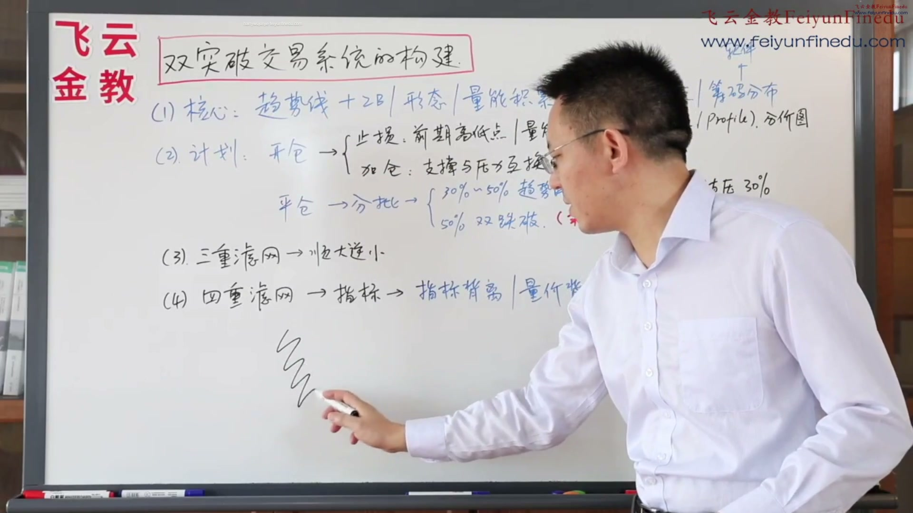
和一二三法则的基础上 进行了一个加工 进行了一个深入的一个 自己的一个改 不叫改革吧 自己的一个优化 因为你的一二三法则 到时候给大家讲 为什么一定要优化 好 我们先讲一下 我们的核心方法是什么 就是虚实现 加上我们的一些形态 比如说我们假设做多 那么你这个地方趋势线一旦趋势线它被突破的时候 我们就看一看底部有没有 比如说有没有二臂这种形态 如果正好二臂和趋势线是同时突破的 这样子 二臂和趋势线是同时突破的 或者是下面没有二臂 它走了一个形态
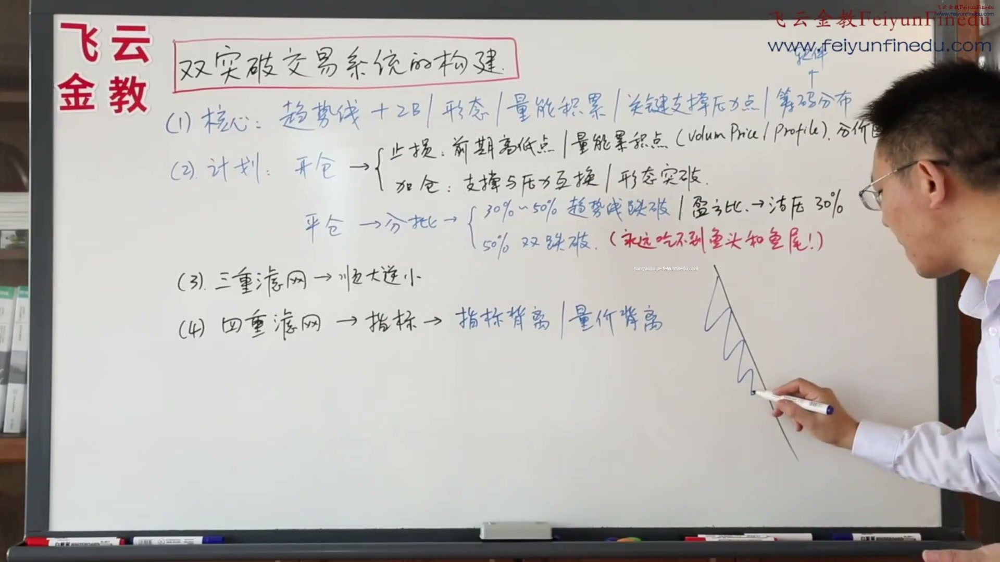
可能有倒三角 可能有菱形 各种各样的形态被突破 加上趋势线被突破 好 量能累积是个什么意思呢 就是说假设 这是一个下降趋势线 下降趋势线被突破的这一刻 下面它没有什么 没有什么前期的什么形态 但是这些点 前期是这么上来的 下来又上来又下来又上来 那么这个点 突破的这个点 就是前期的量能累积的最多点 你去看这个地方量很大 量很大 那么这个地方一旦能突破 这个量能累积区间
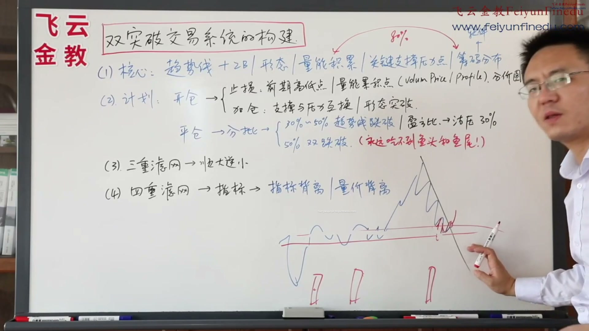
它已经好几次了 关键的支撑压力点 它突破了 我们演示 这个具体的示范里面 比较清楚一点 最后筹码分布 筹码分布和量能累积 很多时候是80%重合的 量能累积的地方 往往都是筹码分布的地方 但是有些时候也不是 所以如果你不放心 你可以打开软件 看一看筹码分布 如果这个区域 正好也是筹码分布 比较密集的地方 那么你就关键突破和趋势线突破 就一定可以买入 好这个量能累积 我们如果你去查 一方面是看这个量 下面这个量 还有一个就是可以看 volume price 有的地方叫volume profit 这样的你去查一查 在国外的网站 国内人一般叫分价图 就是一个价位上的一个量能累积
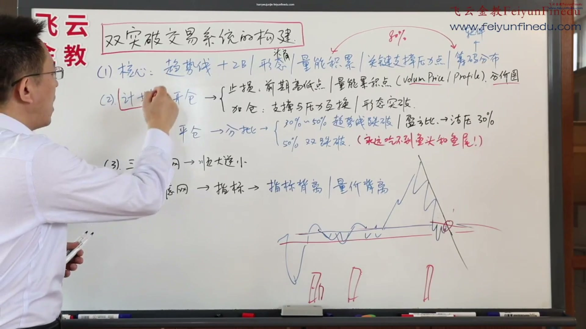
这就是我们的双突破系统的一个核心 当然这个地方的一个形态 还包括我们最经典的什么 头肩是吧 高于最经典的头肩 所以大家一定要注意 好 我们来看 那么既然你懂了 知识点也打好了 我们现在看计划 你是如何做交易计划的 计划是交易计划 你平时要把它写下来 每天 开仓我在哪开 好 我这个点突破了 我就开仓 但是止损我在哪受 我一般的受止损有两个方法 请大家注意 很多朋友问 受止损的方法 我们现在在这期就讲清楚了 第一个方法 就是前期的高低点 那比如说是头肩 那么我受止损 肯定是在这个右肩这个地方 为什么 因为右肩一旦被跌破
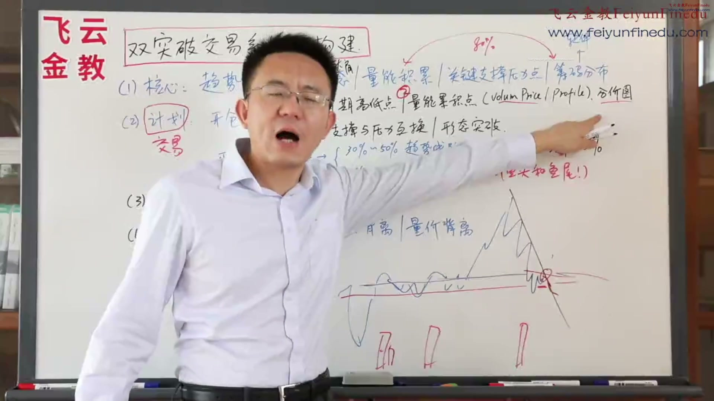
那么箱体也是啊 这个箱体一旦 我这个低点被跌破 那么就会变成 另外一个箱体了 所以说一定设在前期的高低点 就是前一个形态的高低点 第二量能累积点啊 量能累积怎么长 第一个你就看 本身下面有一个量 如果你不喜欢看这个量 你就去查软件 有一个volume price 或者是分价图 看哪一个价位准确的价位 上面的量能累积最多 你就把这个止损设在这个价位以下 就可以了 好 这是两种设止损的方法 好 还有一个 那你如果赚钱呢 这开始涨 那你怎么加仓呢 加仓 第一个支撑压力互换的地方 那比如这开始涨 那么什么地方支撑压力互换 这样嘛 明显的 上去回收再来
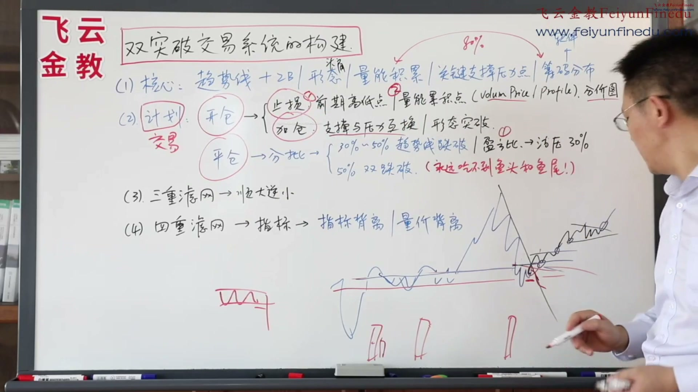
因为支撑压力互换 它可能是N字形 是不是 它没有形态 那么一旦它做了形态 调整形态 形态突破的这个点位 也是你的加仓点 那么 什么时候走呢 什么时候平仓呢 所以开仓 止损 加仓 平仓 平仓我强烈建议分批平仓 第一个最早的平仓点 你可以根据银灰笔 估压 就比如你这来了 以前的估压位在哪 在这 那么我就把我的止盈 先自动的设好 就设在这个什么10块钱 这个是6块钱 就设在10块 我30%的资金先走 好 走了之后 趋势线跌破 又30% 如果你不喜欢 你喜欢顺着趋势 我不去猜测 那么你可以把50%资金 设趋势线跌破
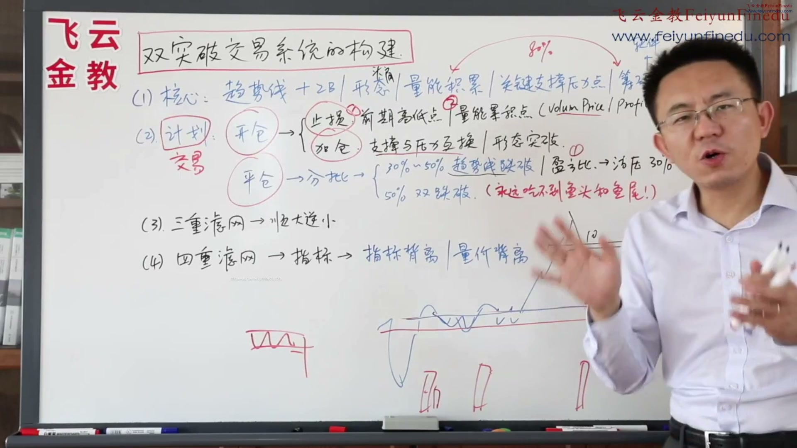
卖到完美的那一边 但是有的时候 估压不存在 你认为有估压 啪的上去了 这个时候你也不要后悔 因为所有的东西 都是不完美的 一定要注意 你每一个方法都是不完美的 好 最后我强烈建议 一定要忍到一部分资金 放到双跌破 就是说趋势线或形态双跌破 当然还有可以根据基本面 基本面估值的地方 那么就可以下来 这个我们再写一下 基本面 基本面因为我们现在就技术讲技术 所以我们没有再详细讲基本面 大家可以把基本面的再放进去 好 50%双跌破 什么呢 比如这个地方 那你一直到这儿 就是卖第一批 是不是 好 趋势线跌破 卖第二批 形态再跌破
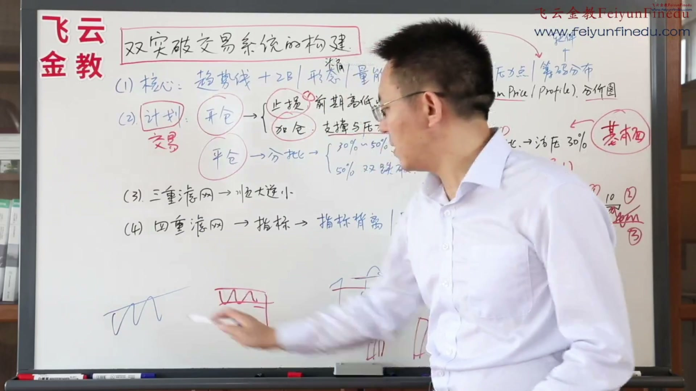
但是你要记住 如果你用双跌破 你是永远吃不到鱼头和鱼尾的 这点一定要记住 就是说你永远买不到最好的点 也永远卖不到最好的点 你永远一段行情 基本上只能够吃到 运气好的时候能够吃到70% 运气不好的时候吃到10%都不错 因为为什么 我们举个例子 像这种情况 底部双跌破 刚上去 没多久 它又来个顶部双跌破 那么针对你能够赚钱的 就是这儿和这儿 是不是 那么你就是 只有这一小段能赚钱 那么实际上 行情从这儿到这儿 是不是 那么你是不是心里很不爽 哇 这一波行情本来我可以赚的 然后你就不想用这个方法了 是不是 然后这个时候 你就去 以后再去操一下底 摸一下底 一操一盯 一摸 亏大了 你一定要认识到
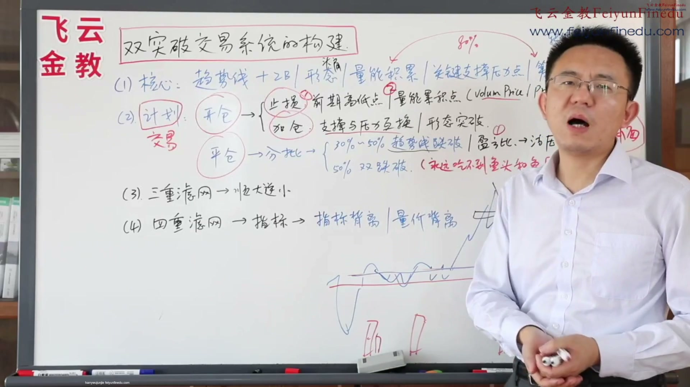
我到底认为这个方法 接不接受 我喜不喜欢 我喜欢我就做 不要后悔 这个和你做人也是一样 你做人每天都有选择 如果你是喜欢四平八稳的 做一个公务员 或者是一个机构系统呆 那么你就不要去羡慕 去读了才赚大钱的人 因为你就是拿工资 拿一点奖金 那么如果你要去出去闯 那么像我和明飞老师 以前都是在一些非常好的金融机构工作 那我们愿意出来 我们愿意出来奋斗 那么你就一定要承担风险 就这么简单的道理 这个世界上没有 没有既不承担风险 你又想天天在那边赚钱的事情 不可能的事情 所以大家就心里明白就行了 好 这就是我们整个的交易系统 三重绿网 我们加个顺当逆向 我们这边不是两重绿网吗 趋势线加上形态双突破 再加一个盈亏比
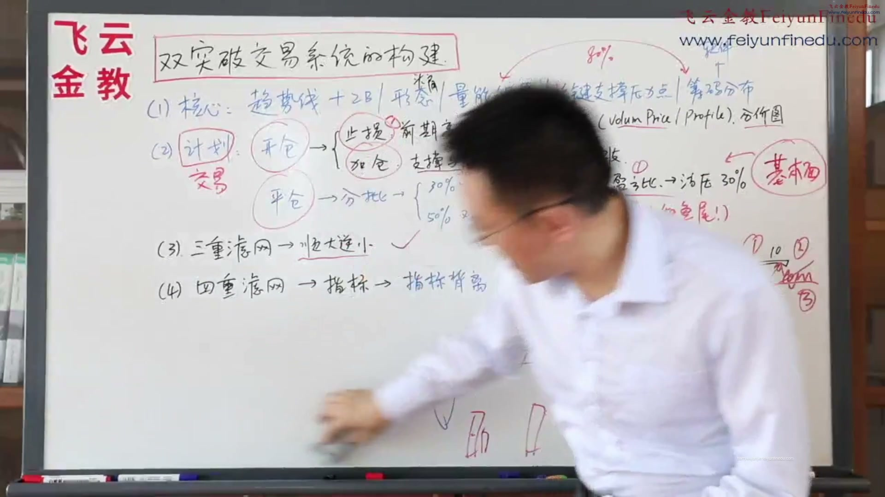
就提高很多 我们举个例子 比如这个行情跌 再下来跌 再下来跌 再下来跌 日线周线月线永远都是下跌的 那么这个时候 用趋势线和双跌破 你看我们复盘复了很多次 往往交亏损 上去突破了赚一点钱 就下来了 上去突破了 断电线就下来了 那么概率就小 诶 与之相反 如果现在这个行情 本来就涨涨涨涨涨 只不过在回撑而已 这个时候你就用双跌破 双突破 上去就很容易赚钱 所以三重绿网加一重 这边是两重绿网 加第三重绿网顺当逆向 好有的朋友觉得 这个东西还太简单了 还是更喜欢复杂一点的交易系统 好啊那你加四重绿网 再加一重绿网叫做指标 你把指标放进去
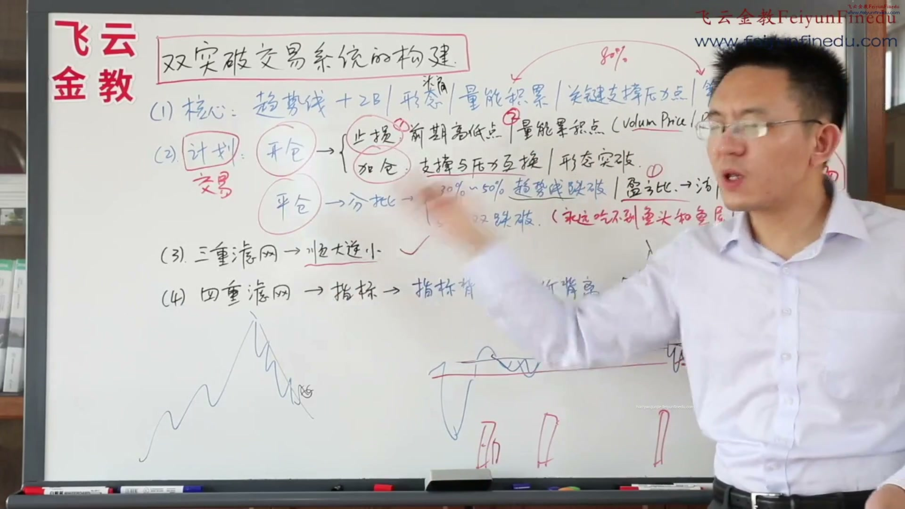
但是大家放心 我们费云之道双突破系统的时候 一般的指标都已经背离了 一般的你买一点基本指标就背离了 你去设 十四有七四都设 量价背离不一定 所以指标背离量价背离 你可以把这几个加进去 但是呢 绿网加的越多 你的机会就越少 就这么简单的事情 如果你要考虑 双重破又要考虑 这个盈亏比 又要考虑数量理想 又要考虑这个指标 那你可能 如果你做日线的话 可能一年里面也就有两三次机会 但是你抓住了你就大赚 如果你是做日内交易 那么一天最多一次机会 或者两次机会顶天了两次机会 那么有些时候根本一次机会都没有 那你忍得住忍不住 反正就是说如果你的绿网越少 你的机会越多 但是你的职损越大
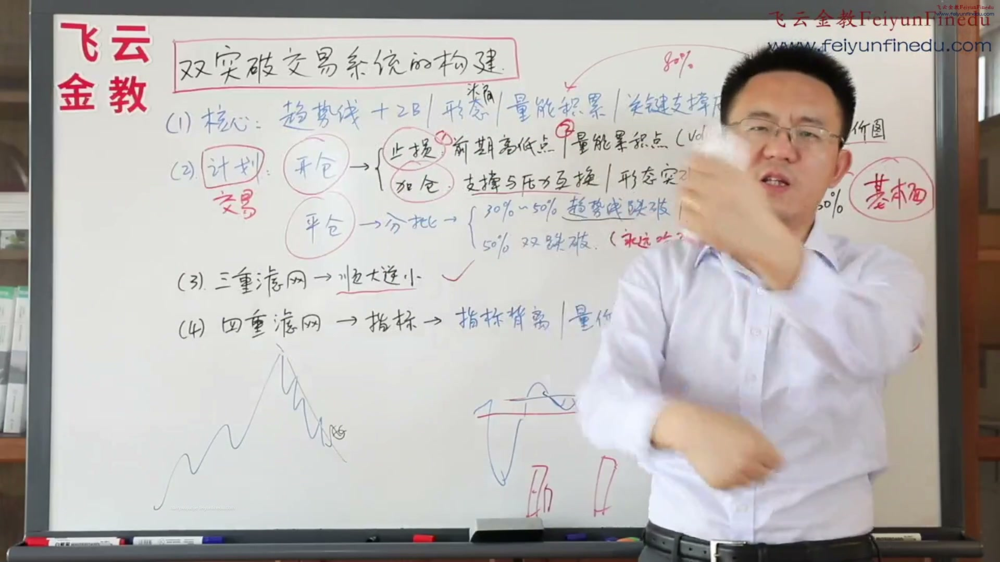
但是呢有些是 反正就是总之 你要做一个 你就坚持一条路 把他做下去 根据大数法则 一定能赚钱 也不能一会儿做这个 一会儿做这个 那你这个两个搞来搞去 你最后两个概率 这样我经常举个例子 你看你这个概率 它一万是 一会儿上一会儿下 是吧 然后这个也是 一会儿下面一会儿下面 那么你这个不动 永远有一天还能碰到它 是不是 如果你两个同时动 那你这个哪年哪月 他们两个能够交合在一起 你都搞不清楚 好 这就是我们双突破系统的一个构建 如果大家还有疑问 我们以后去看我们大量的复盘 你就一定能够清楚 好 我们就再举一个例子 举一个完整的例子 好 我们现在来看一个经典的 不能在意经典的例子 这个可以说这个图 是对我的逆转于时
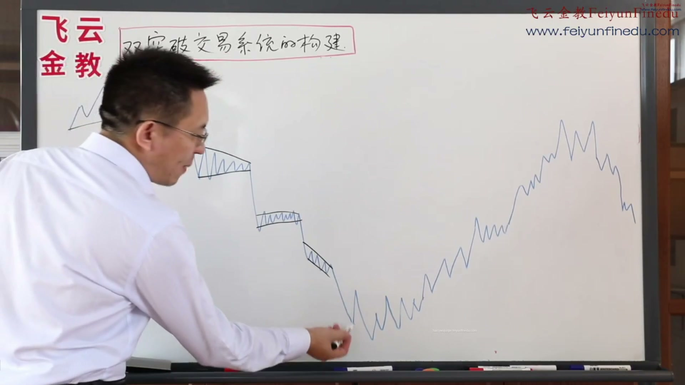
跌破头尖 一般的会收一个向上倾斜的一个箱体 因为这个力量比较强 所以它的高点不断的抬高 然后呢 后来再收一个向下的一个三角形 因为这个时候大家发现 哎 无力了 然后呢 可能会收一个箱体 这个地方大家还比较关注 最后再往下跌的时候 就能下降骑行 这个时候力量已经开始疯狂了 做空的力量很大 大家开始绝望了 最后一个抛售高潮 好完成之后 底部做形态 二次测试 这跟威克夫这套系统 吸筹 好突破颈线 突破颈线 回抽 走N字 N字走完 走形态 形态走完 走骑行 骑行走完 前面 又收一个顶部的一个相提 或者是M 顶部相比收完之后跌破紧线 跌破紧线之后回抽
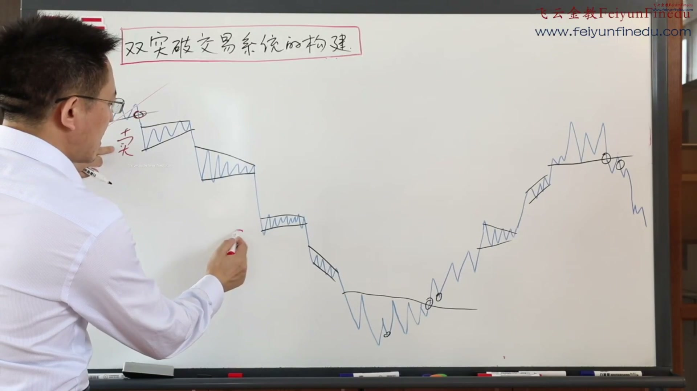
在这个经典的过程中间 咱们如果是用双跌破 我们讲到这个地方已经水不跌破了 我们就不用了 好 那么我们是不是在这儿 要有一个卖空 卖 卖完了之后 我们如果前期的量能累积在这 假设这边很多量能累积的位置 那么在这卖 我们的第一批资金在哪出 就在我们量能累积 对方出 出第一批资金 是不是 我们第二批资金在哪出 做空 就去向话的 去向话的不太好 第二批资金是这样子 去向这样子 第二批资金是趋势线突破的时候 我们第二批资金出来 第三批资金什么地方出啊 这个趋势线和这个形态突破的第三批资金
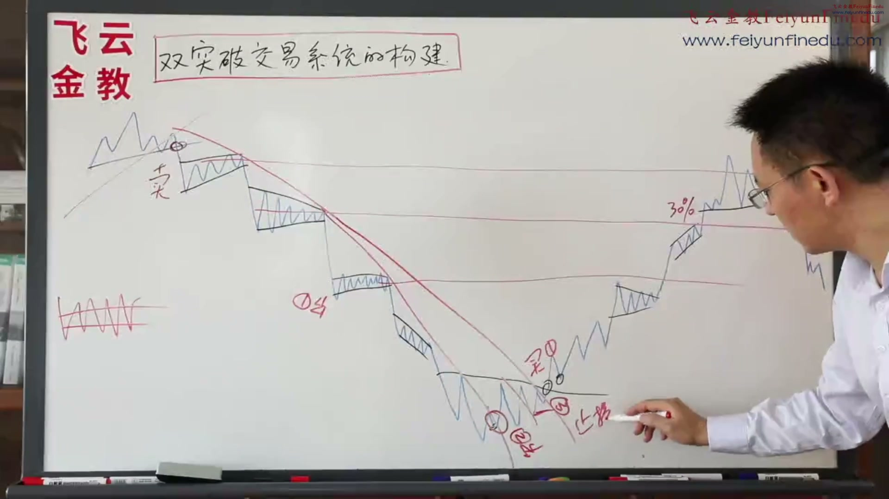
第一个买入点和第三个出仓是一模一样的 好 第一个买入点 那么买了之后 我们又在什么时候走的 我们可以看到 这一波上来 我们的量能估压位在什么地方 这是第一个估压位 这是第二个估压位 是不是 好 这是第三个最大的孤鸦位 那么我们就在 我们认为最大的孤鸦位 比如这个地方 我们走34% 是不是 我们的止损数在这 止损 我们的估压 这地方第一估压 30% 我们先走了 管它对不对 第二个 趋势线 跌破的时候 这个位置 第二批资金 30% 走 第三 这个地方跌破的时候 第三批资金 我们再走 只不过这个时候 你要不要 再重新开通啊 不一定 为什么呢 这个地方是一个大的涨势啊 你在这儿开通 不然你等到这儿做多吧
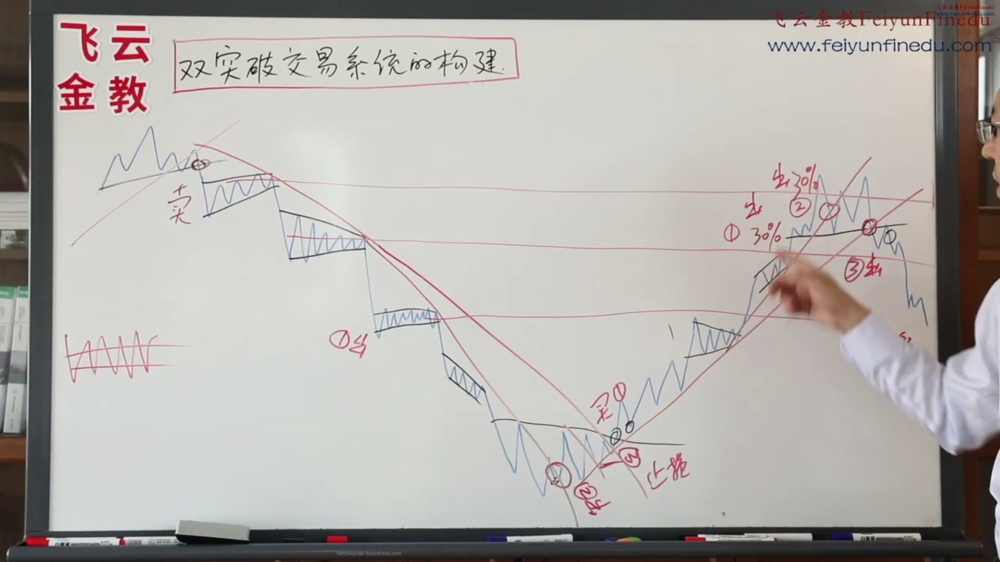
出一 出二 出三 分批资金就全部出来了 这种方法绝对是最保险的 最稳定的移民方法 你自己去试一下 那也可以自己去试一下 只要你能够耐心的等到卖点 耐心的等到买点 耐心的等到反弹 该止损的时候 坚定止损 该出仓的时候 坚定出仓 一切按照计划来 我包你赚钱 没有 没有不可能赚钱的 这套方法 没有 没有不赚钱的道理 根据大俗法则 根据逻辑运算 没有不赚钱的道理 这就是我们整套的 双突破交易的构建 我最后再讲一点点的
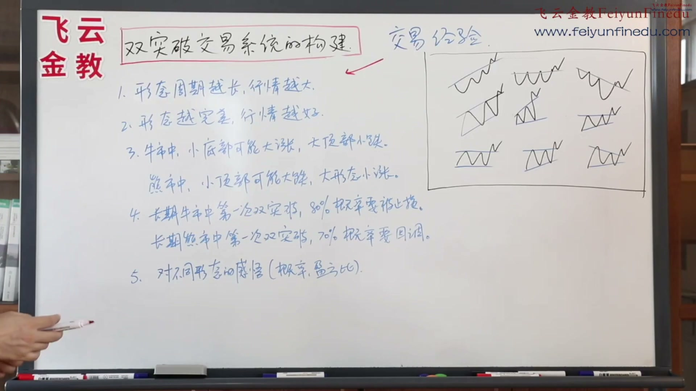
好我们现在再来讲一点 我个人的十年的教育经验 这些可都是字字千金 你有一天现在不能理解 你将来慢慢的就能理解了 我都是免费给大家传授一下 因为我相信我给出的越多 对别人帮助越大 将来这个宇宙会把这些东西 好的东西反馈给我的 所以说给的越多 我会收获越大 所以我也愿意和大家分享 当然不能全部百分之百分享 但是所以我也给会员分享 因为这个一定要支持 能量是互换的 我给了你之后 你给了我东西 大家之间就是一个能量的互换 我平白完全百分之百给你 你没有给我东西 也是不对的 好 我们来看一个 我自己的第一个 就是形态的周期越长 行情越大 这个当然以前也有一些
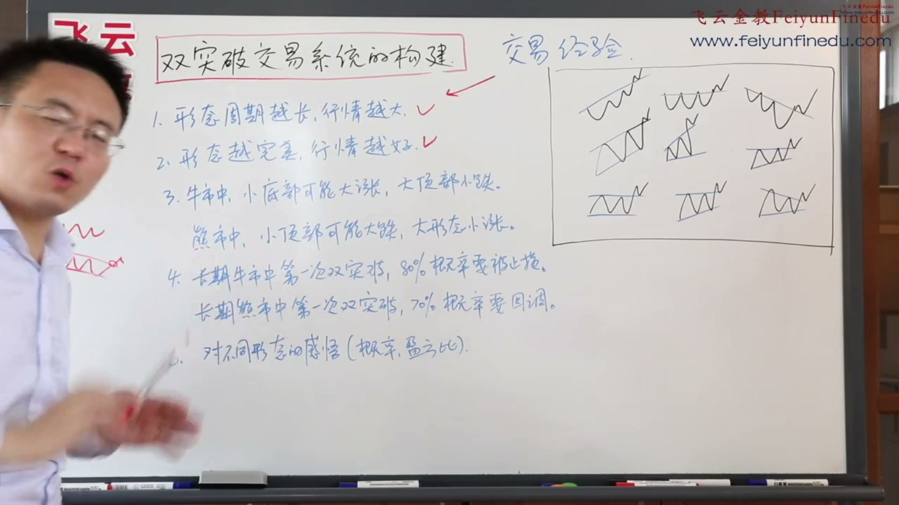
和盘了三周的一个形态突破 那肯定盘整了三周的形态突破 它的行情更大 第二个就是行形态越完美 行情越大 请大家一定要注意这一点 这一点在我们以前日本的纳入图纪要里面 这个美国人Steve 他还举了一个例子 我觉得非常形象 他是这么说的 从山顶上你推一堆石头 一堆木材 从山顶上推到山顶 掉下来 理论上掉下来之后应该怎么样 全都是杂乱无章的 那如果你把木头从山上推到山顶 一到山顶一看 这个木头全部被垒得漂漂亮亮的 那证明什么 一定是有人在垒嘛 一定是有人故意垒的 不可能掉下来掉得那么完美 所以形态越完美 证明什么 有庄家在做盘
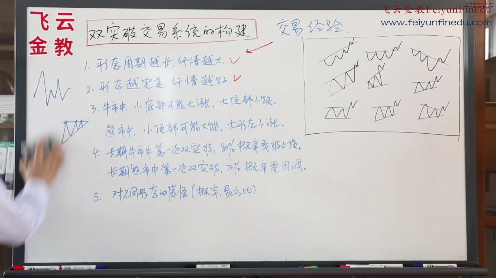
那你说这个 你能保证有庄家做盘吗 当然没有 那如果你找上去 非常完美的直角三角形 完美的不能再完美 上去下来 每一次到这个点就完美的下撤 一个价位都不差 那你说是不是有人做盘 百分之百有机构在那做盘吗 是不是 这一个道理 越完美的图形行情越好 像有一个 最近有一个品种 他走的一条直线一样 完美的每次这个K线就这样子 你就让他直持去比 非常完美 一次都不差 那么证明什么 一定有专业在这做 这个毫无质疑的 他如果没有专业做的 一定会做成这样子 所以如果你知道选股票 4000多只股票了 你选什么 就选形态越完美 明白吗 现在一下子给你指名了
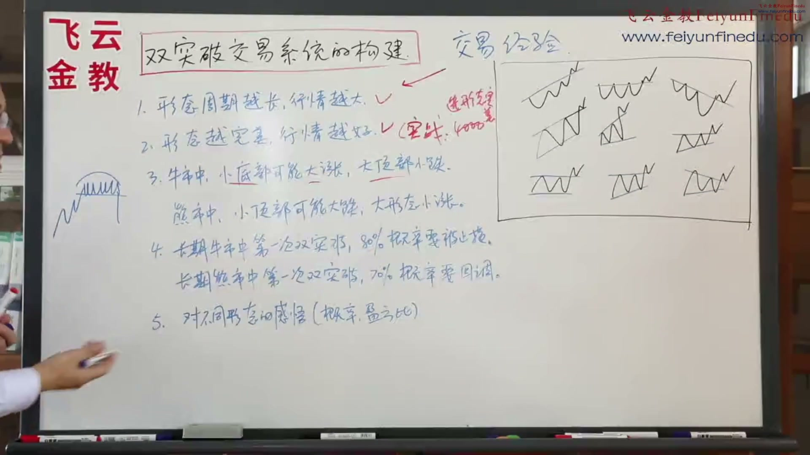
你去选形态完美的 它越完美 它越背后有庄严做盘 好 第三牛市中间 小的底部可能大涨 大的底部小跌 一定要注意 比如你这个行情一直在涨 像美股以前牛市 搞了好大一个头肩的 什么圆弧啊 各方面的头肩 弹了四五个月 啪的跌下来 哎就熊市了吗 不会的 跌下来很快又回去了 这就是为什么 这就是他的一个大的顶部 有可能跌的很少 就是因为他牛市里面 熊市小的顶部呢 本来一个很小的微型盘转 他就可能涨上去 这就是牛市里面 小顶部可能大涨 大的顶部 只是小跌
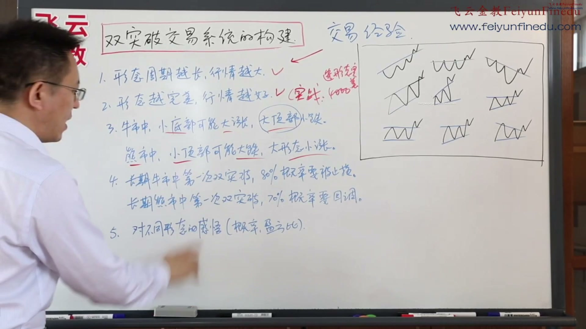
大家去看看这个股票的这个熊 熊市跌跌跌跌跌在这儿 哎没但是做了个小头肩呢 很小的头肩爬了跌下去 后面盘呢像天然气是不是 天然气盘了多久 天然气盘了快半年呢 一直这个大的一个形态 怎么的形态 一看完美的不得了的一个圆弧体 刚涨上去就打下来 是不是 所以就是这个道理啊 如果是一个熊市里面 你就不要寄希望于 这个他的一个 熊市里面小顶部 你就可以去估算 计算这个盈亏比 计算概率的时候 你就不要担心 大的形态反倒要小心 不要去中仓 因为这个熊市大的形态 都可能长得比较小 好 这个 然后呢 第四 长期的牛市里面 第一次的双突破 80%概率要被制止 什么意思 这是个牛市是不是
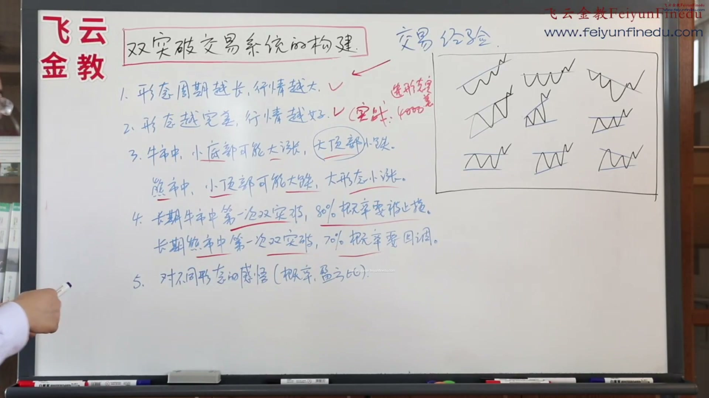
然后你这个时候千万不要气馁 第二次第三次勇敢的去做 熊市里面也是 第一次双突破70%概率要回调 为什么熊市要少一点 因为底部比顶部 更容易抓 顶部是很难抓的 就是往往抓一次错一次 但是底部往往还能够正确一点点 但是也是70%概率要回调的 所以你做的时候 要用天然气 记得没有天然气 美国天然气 这一波大的盘整 终于突破 但是做的时候你就知道 哇 很有可能是假的 很有可能是假的 为什么 就是他第一次的重突破 70%概率要回调 第二次第三次就正确了 所以你一定要学会 第一次不要动仓 第二次第三次 切而不守的动仓 但是你每次要做 为什么 只是一个70%概率 还有30% 不理你 啪的一下上去了
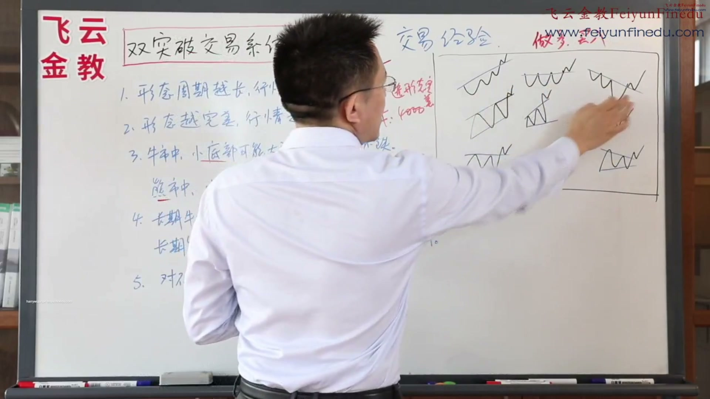
这是第二 第四个 第五个 对于不同形态的 开仓点的感悟 就是概率 不应匮备的感悟 这个是什么意思呢 这边我来给大家 讲一讲 大家可以看到 这样子 几个图形 假设我们现在是做多 你是准备买入的 做多 就是你要买 那我们来感觉一下 这个 这个 这个突破 它是往上走的一个箱体 突破 它是平的突破 它是往下突破 我们一般的人喜欢买哪一个 一般的人肯定喜欢买这个 不要说别人了 就像我自己 偶尔都还喜欢买这个 但是这个 主要是关键是云亏比 一定要注意 我现在说的只是概率 但是实际上从概率来讲 这个是最大的 为什么 他的惯性在加速
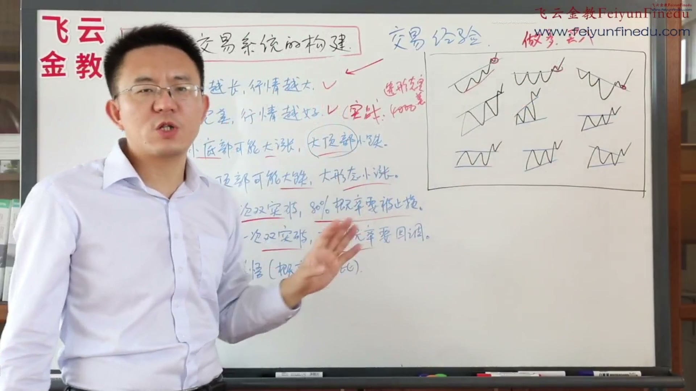
指标超买 超卖 背离 所以一般的人不敢在这做 但是实际上他是概率最大的 因为他的惯性在 这个地方凭着买也还行 这个地方其实最差 相对这三个里面 他的概率是最小的 只不过 他的盈亏比 有可能是最大的 请注意啊 有可能 为什么 因为要看它图形里面 如果只从概率角度讲 它的概率是这样 请注意 但是它的荧亏比 你要去衡量啊 往往这个时候 荧亏比就不太好 好 这个图形 它们是一个走箱体 走箱体也是同一个道理 它都是斜的 它是直的 它呢 是横的 哪一个最好 实际上它是最好的 箱体图 只不过我们一般人不敢买 它是次之 它相对来说是最落后的
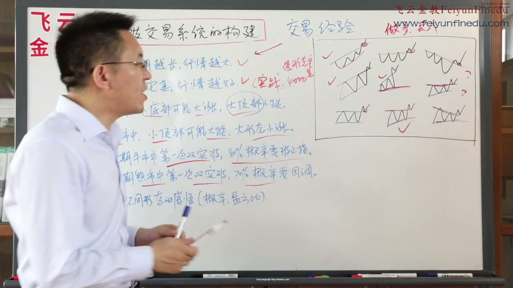
普通人啊 普通交易者 前面两个最好的 一般的人不敢买 就是觉得太高了 然后低下来 觉得太高了 但是我们要告诉你 实际上 它们两个概念是最好的 同一个道理 大家看 这个是一个横着走的突破 这个上边界横着 下边界斜着 这个上下边界都写成三角形 哪一个最好 中间这个是最好 中间这个是最好 为什么最高 因为第一 上边界横着啊 高点不断的 在前面的去试探前面的高点啊 重力突破 低点不断的抬高 这边有主力和大资金在不断的抬高去吃货 好 那么这个都是横着的 那么这个呢 第一点在抬高 但是高点在降低 当然也有可能有些时候 他要去洗车洗盘 那是另外一个情况 我们只是说
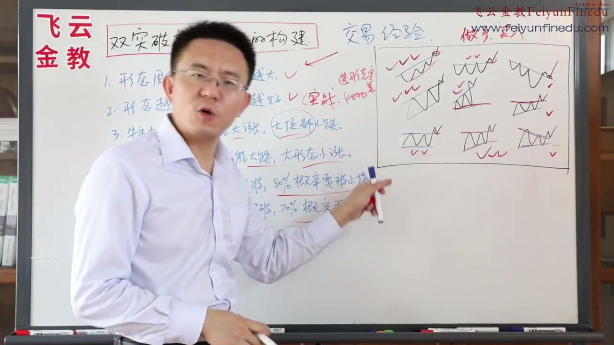
就是你自己去感受一下 他们这两个的概率 我们就放一个沟 这些概率都是一个沟 这边两个是两个沟 好 这就是对不同形态 不同东西的一个感觉 当然这个只是理论上 我们还要加到 三重六往里面去啊 数量级小啊 还要加到零亏比里面去啊 估压呀 所以就相对来说 就有准套系统 但是你自己感觉一下 你要知道有这个事情 你要知道有这个事情 好 这是第一种 做多 那么做空呢 我们也来看一下 好 我们就来看一下做空 你要在这些图形里面去做空 你要怎么做 好 我们来看一下一个道理 如果去做空 我们找趋势 找惯性 哪个最好 肯定它是最好的 它的这个趋势是向下的
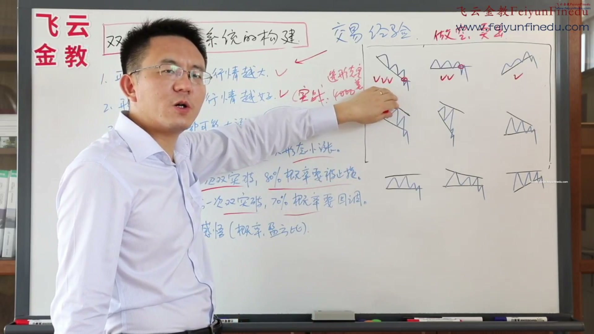
它呢 其实是最差的 但是我们普通人最喜欢在这做 是不是 所以说你赚钱都是反的 你做个趋势交易者 你就是你不会在这做 你正在趋势向上的 刚突破你要去做 其实你是个逆势的 一般的人不太不愿意在这做 因为觉得 哇这太低了 哇这个要回调了 总觉得要回调是吧 但是实际上它的概率是最高的 当然还是一句话 你们要赢 要符合一下赢会比 计算一下赢会比 好 同一个道理 它在一个箱体里面 在箱体的时候 它也是概率最高的 有惯性在这边 而它呢是一个括弧三角形 高不高呢 也高 基本上 理论上说 它应该是最高的 它是次之的 因为它是平行嘛 它已经加速了 它是一个扩散线 它已经加速了 所以它是最高的
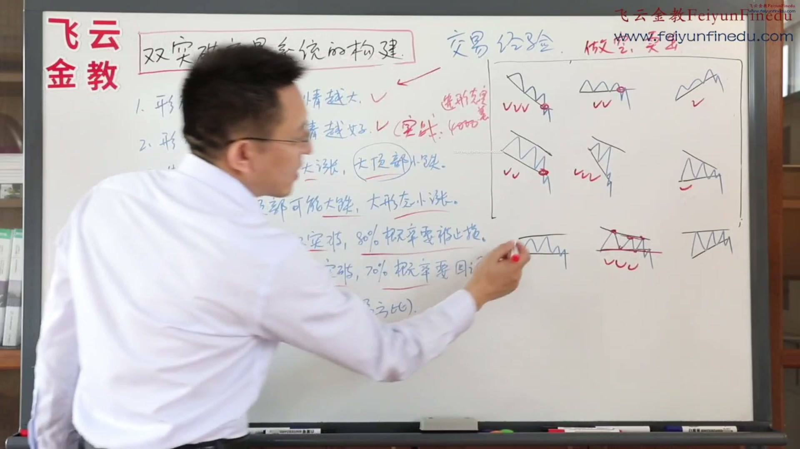
高点降低低点还在抬高 好 那如果这三个里面 哪一个做空最好 哪一个做空最好 大家想一想 做空最好的肯定是中 我们做空最好的 我们这个看怎么画 如果这个都是直的 这两条边都是直的 那么它高点在不断的降低 而前面的低点又一直微动 所以突破了可能会下来 而这个呢 它是高点 就是次高点在不断的抬高 不断抬高 是不是 那么它的趋势 还有一定的趋势 而这一个 它的这个低点在不断抬高 高点又是直线 所以说它感觉到 它其实最高跌 其实不是 如果这个地方是值得又下来 那么它更加是最好的
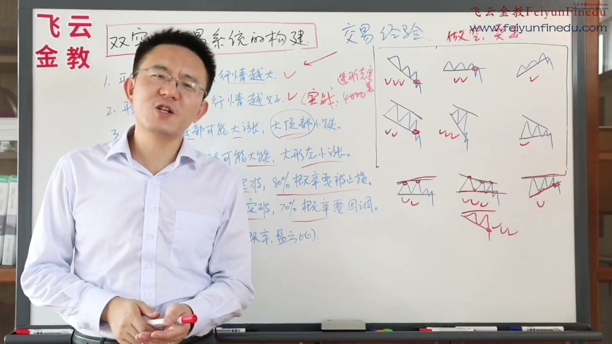
这是不是和我们好多人的理解都是反的 就是因为我们很多人没有想到 我们一定要找趋势 找关系 这样概念才高一点 好的 反正这是我们的这套趋势交易法的核心的 他一定能跟你赚钱 我们有一种交易法叫逆趋势 周期说实话可能和这个观点不一样 但是我们绝对不推荐 因为这种根据我的交易经验 还很多人交易经验 都是让你小赚大亏 往往让你好不容易赚点小钱 行情一来全部亏掉 好 非常感谢大家 我们的这整个的系列 道士理论的金奖 以及我们的 双突破教育学的构建 教育知识的经验讲解 就已经全部完成了 我个人认为 只要你认真的学
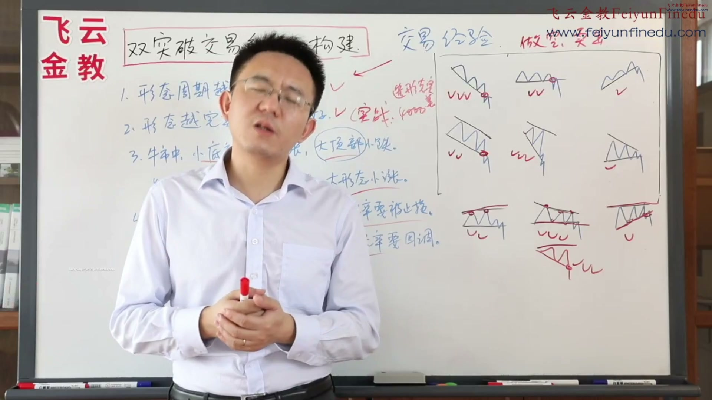
就不靠我了 叫师父林静梅修行靠个人 这套方法绝对有效 但是呢 你能不能自我控制 一方面看自己 另一方面 如果你愿意 将来你可以继续学习一下 我们的金融交易哲学与心理学课程 这个课程 如果你认真的学 我个人反而认为非常非常有用 可以解决你所有的哲学心理学问题 当然这个的过程 必须靠经验 边学边看心理学东西 哲学东西 边靠经验 这样子反复的来经验 感悟 理念 理念经验 不断的正当回复 互相的相辅相成 光靠理念 你没感觉 没感觉 光靠经验 你提升不到道的层次 只有这两个之间 不停的学习练习 你就一定能够找到 交易成功之路 好的 非常感谢大家